Création de sites web
Sites vitrines, boutiques en ligne et pages professionnelles, rapides sur téléphone et pensés pour transformer vos visiteurs en clients.
Minta Services crée vos sites web, gère vos serveurs, enregistre vos noms de domaine et installe chez vous Mande-IA, l'intelligence artificielle qui parle bambara. Depuis Ségou et Bamako, pour tout le Mali.
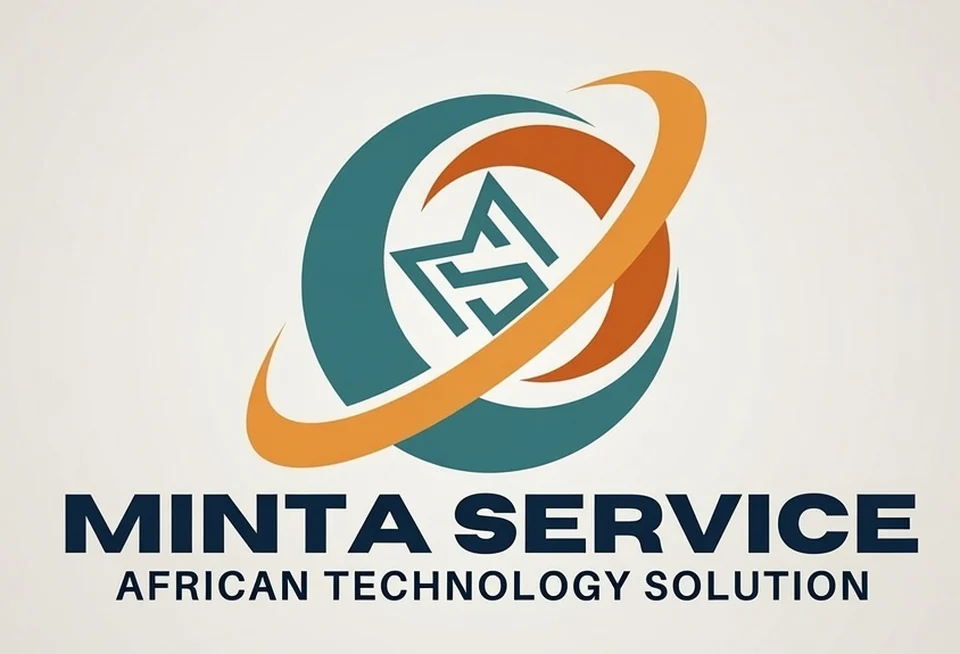
Notre présentation en quatre étapes : chaque partie de l'écosystème renforce la suivante, pour que le Mali construise ses propres outils numériques.
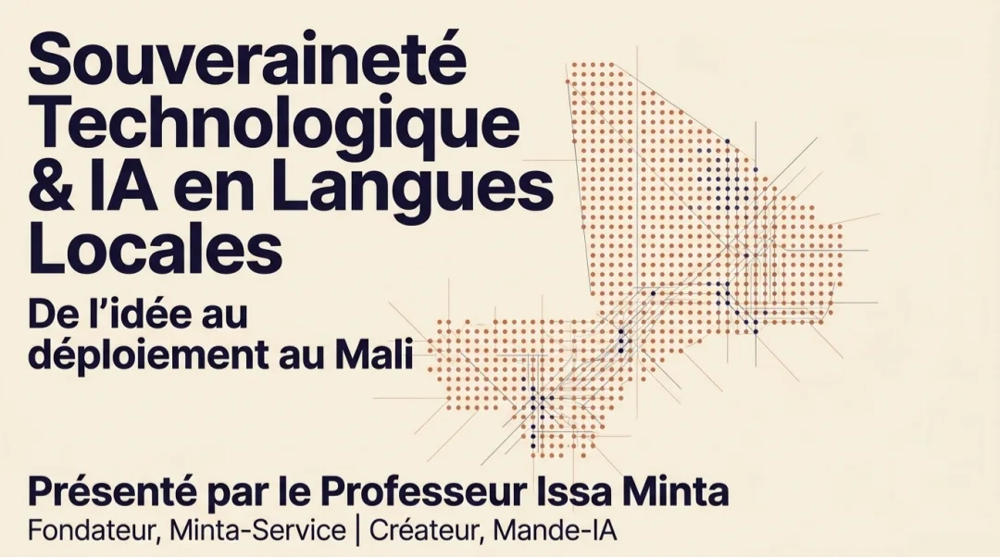
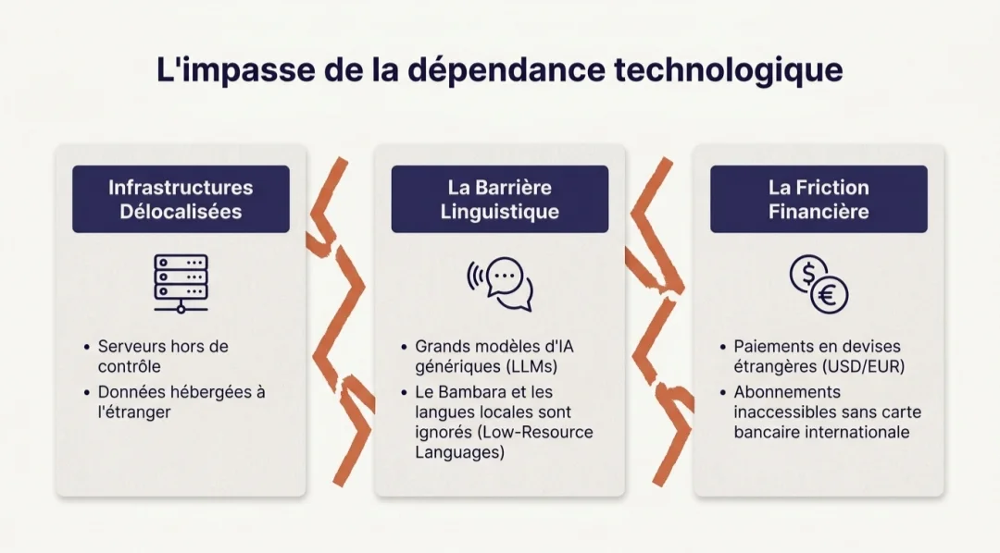
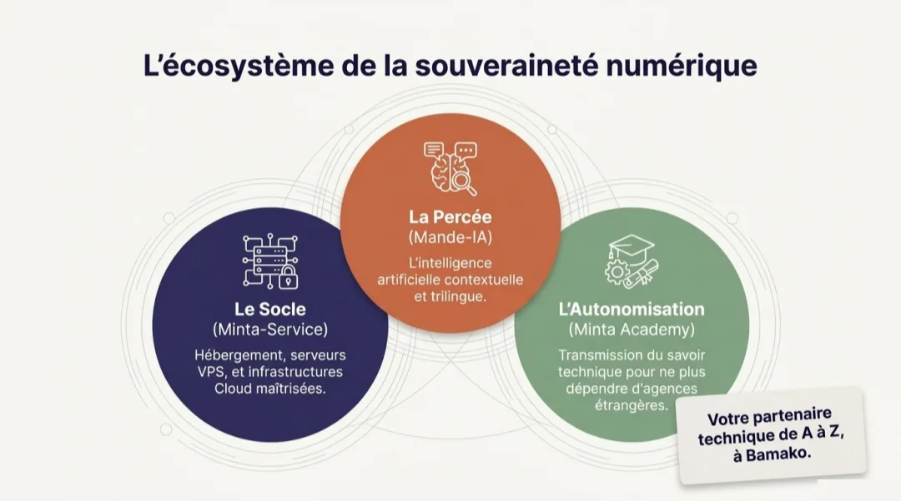
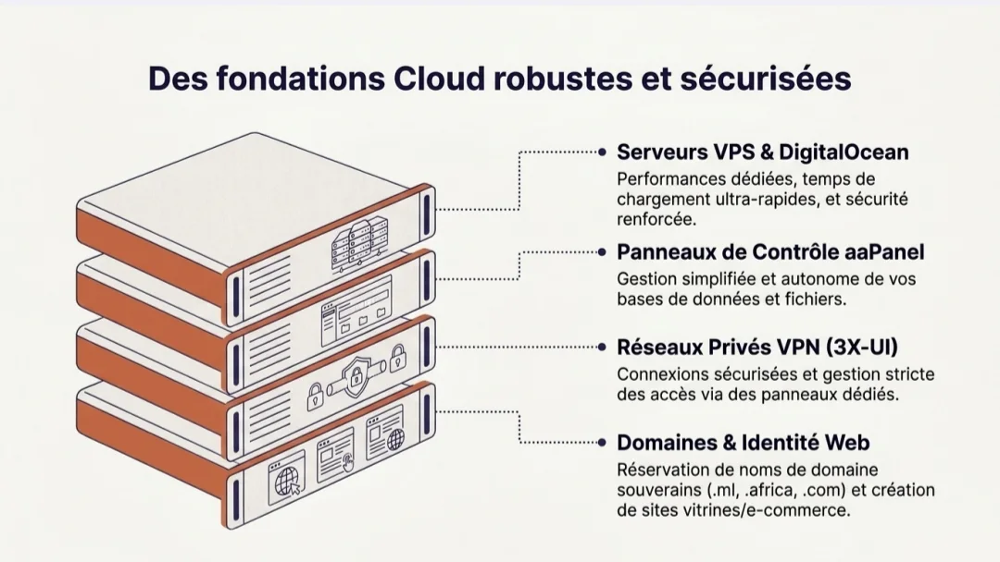
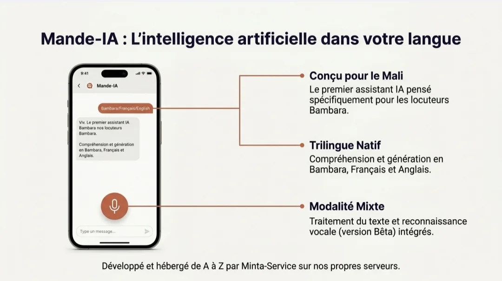
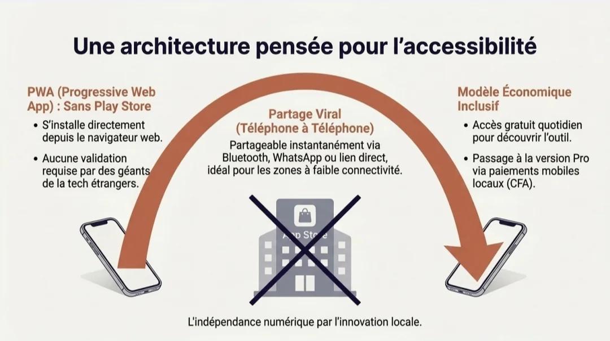
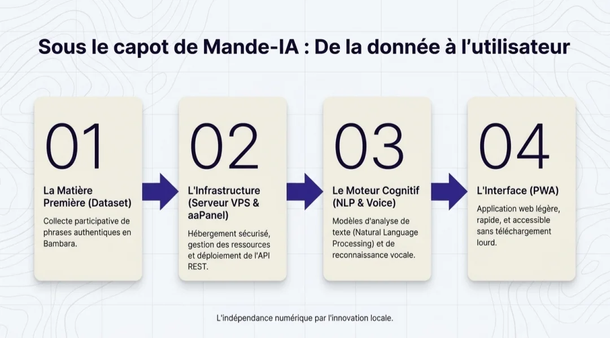
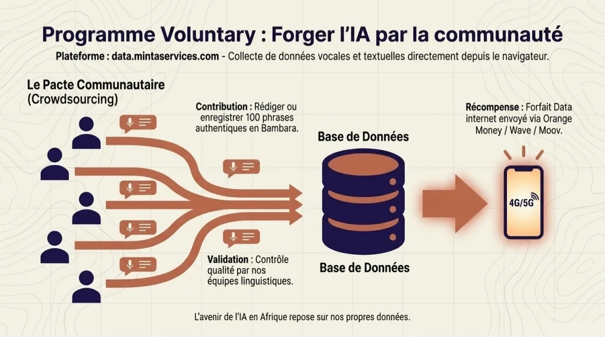
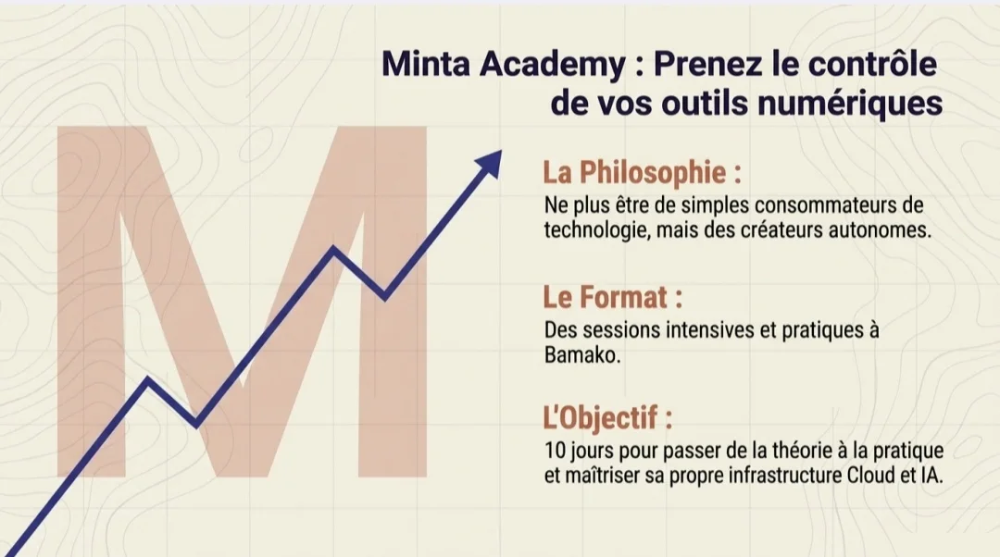
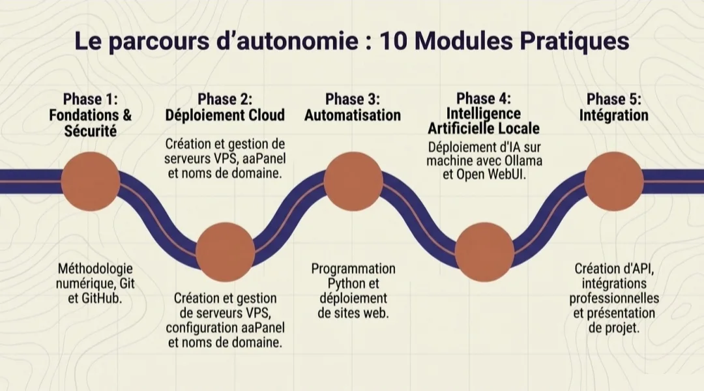
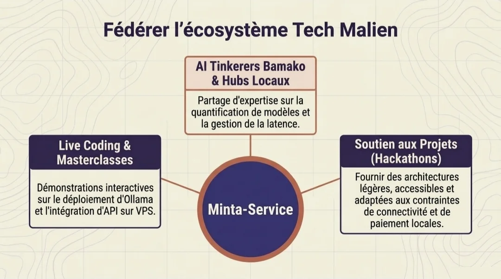
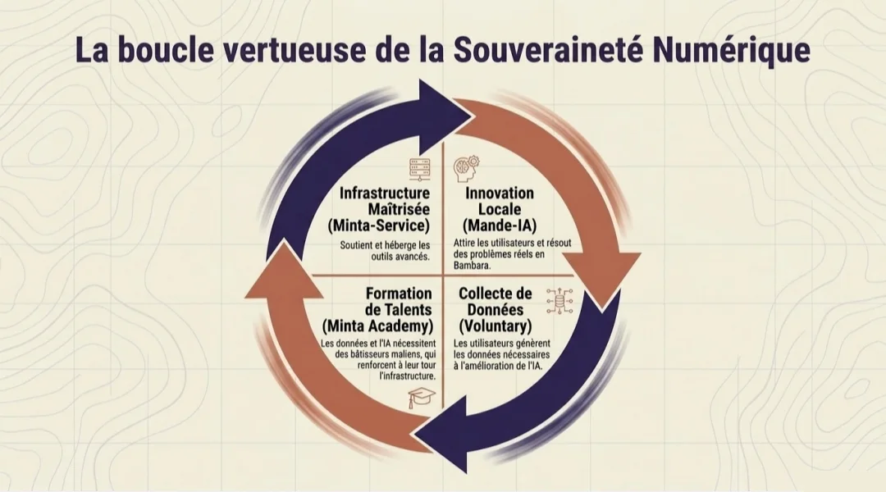
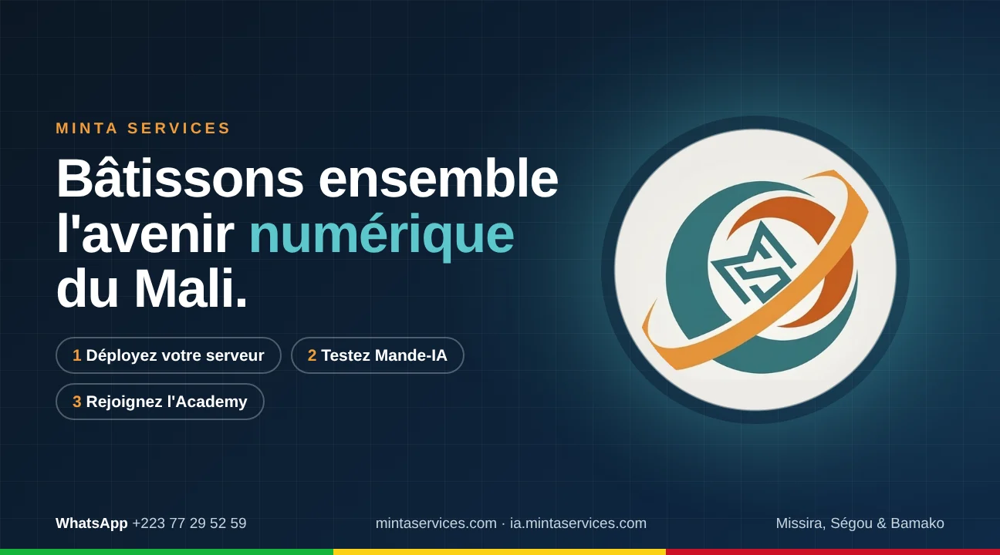
Minta Services héberge les sites, les serveurs et les outils d'IA sur une infrastructure que nous gérons nous-mêmes.
Mande-IA attire les utilisateurs et répond à de vrais besoins, en bambara, en français et en anglais.
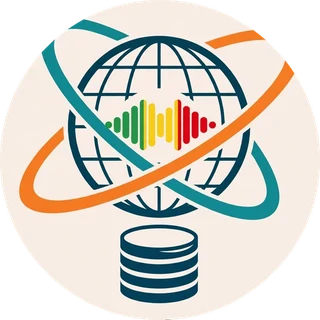
Avec Data-Collections, les utilisateurs écrivent et enregistrent des phrases en bambara qui améliorent l'IA.
Minta Academy forme des bâtisseurs maliens, qui renforcent à leur tour l'infrastructure.
Un seul interlocuteur, du nom de domaine à l'intelligence artificielle. Nous construisons, nous installons, puis nous restons là pour la suite.
Sites vitrines, boutiques en ligne et pages professionnelles, rapides sur téléphone et pensés pour transformer vos visiteurs en clients.
Installation, sécurisation et maintenance de votre serveur, avec aaPanel pour gérer vos sites, bases de données, fichiers et certificats HTTPS.
Réservation et configuration de votre adresse, avec le DNS et les e-mails professionnels.
.com.ml.africa.net.org
Votre propre panneau VPN pour des connexions chiffrées et une gestion simple des accès de votre équipe.
Mande-IA installé dans vos locaux, avec une interface pour toute l'équipe et vos documents. Il fonctionne sans internet et vos données restent chez vous.
Le pack entrepriseMises à jour, sauvegardes, corrections et conseils. Une période d'ajustements gratuits est incluse après chaque livraison.
Quatre initiatives de Minta Services, chacune avec son équipe et son adresse de contact.
L'assistant d'intelligence artificielle qui parle bambara, français et anglais. Sur le web, sur WhatsApp, et sans internet avec le modèle professor-minta/mande-ia.v3.
Deux choses différentes. Les modules en ligne, en libre accès : 10 supports de cours à lire seul, du nom de domaine au serveur, jusqu'à l'intelligence artificielle qui tourne sur votre machine. Et la formation accompagnée, payante : 12 séances en direct sur Google Meet avec un formateur, depuis Ségou, du 7 au 24 décembre 2026, 75 000 FCFA.
La collecte de voix et de textes en bambara qui nourrit l'intelligence artificielle africaine. Chaque contribution aide Mande-IA à mieux comprendre nos langues.
L'accompagnement des jeunes entrepreneurs maliens : de l'idée au premier client, avec les outils numériques qui font la différence.
Découvrez Mande-IA et Minta Services en moins d'une minute. Comme les modules, les vidéos sont en libre accès : regardez, apprenez, puis pratiquez avec les modules de Minta Academy.
La démonstration, 43 secondes. Essayer Mande-IA
Nos services et nos comptes, 21 secondes. Tous nos liens
Le Professeur Minta présente l'écosystème : l'infrastructure, la formation et l'intelligence artificielle qui parle bambara.
Voir la chaîne YouTube
Vidéo en libre accès, 20 à 25 minutes.

Vidéo en libre accès, 20 à 25 minutes.

Vidéo en libre accès, 20 à 25 minutes.
Fondateur de Minta Services, créateur de Mande-IA et de Minta Academy
Professeur de technologie et ingénieur IA full-stack, Issa Minta rend le numérique et l'intelligence artificielle accessibles aux étudiants, créateurs, entrepreneurs et communautés du Mali et d'Afrique. Chaque projet part d'une idée locale : une IA qui comprend le bambara, des cours en libre accès, des serveurs installés et maîtrisés au Mali.
Inspirer, innover, autonomiser la jeunesse malienne.
En général 5 à 10 jours ouvrables, selon la complexité. Nous confirmons un délai précis après avoir parlé de votre projet.
Orange Money, Moov Money, Wave et carte bancaire. Vous choisissez au moment de la demande, et nous vous contactons pour finaliser.
Oui. Chaque projet comprend une période d'ajustements gratuits pour corriger les problèmes techniques constatés après la livraison.
Oui. Les sites, serveurs et domaines se gèrent à distance, partout au Mali et à l'international. Les installations de Mande-IA en entreprise peuvent se faire sur place ou à distance.
Les modules en ligne sont en libre accès, à lire seul : 10 modules sur mintaservices.com/academy, sans inscription, et les vidéos aussi. La formation accompagnée, avec un formateur sur Google Meet depuis Ségou, est un service payant distinct : 12 séances du 7 au 24 décembre 2026, du lundi au jeudi de 18 h à 20 h, 75 000 FCFA (50 000 FCFA pour les étudiants), 15 places. Voir le programme et l'inscription.
Oui. Nous installons Mande-IA dans vos locaux, avec une interface pour toute l'équipe, vos documents et une formation. Il fonctionne sans internet. Le prix est fixé sur devis : voir le pack entreprise.
Écrivez-nous, appelez-nous ou envoyez un message WhatsApp : nous vous répondons pour en discuter.